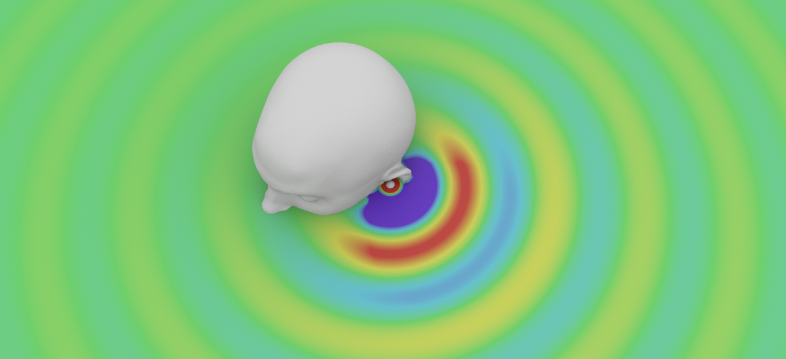

Virtual Acoustics
Binaural Audio
Binaural audio technologies create three-dimensional sounds using two-channel sound
systems such as headphones. To produce virtual sounds
around a listener's head, we can record sounds
using microphones placed in the left and right ears of a
head and then play back the recording through headphones. However, this approach limits
the binauralization to the particular head and environment used in the recording. Alternatively,
we can determine how non-spatialized, free-field sounds are
filtered by a human head and torso and then play that
filtered signal through headphones. This binaural filtering function is
known as the head-related transfer function (HRTF), and it can be used to binauralize sound for
any listener regardless of environment.
An HRTF can be measured in a lab or simulated on a computer. Although lab measurements can
produce accurate HRTFs, they are time-consuming and costly to perform. Computer simulations, on the other hand,
are much faster and more inexpensive. In my research, I focus on improving volumetric HRTF simulations.
Of particular interest are differential geometric methods that accurately and efficiently
model open and closed boundaries encountered in HRTF simulations.

Reverberation
Reverberation technologies incorporate the sound properties of
a physical space—such as a concert hall, an amphitheater, or an outdoor environment—into an audio signal. To incorporate
these sound properties into an audio signal, we can convolve the signal with the impulse response
of the physical space. In my research, I build volumetric simulations of reverberant environments in order to
accurately and efficiently compute the impulse response of any space. Specifically, the focus of my PhD dissertation
is on improving boundary condition modeling in these simulations.